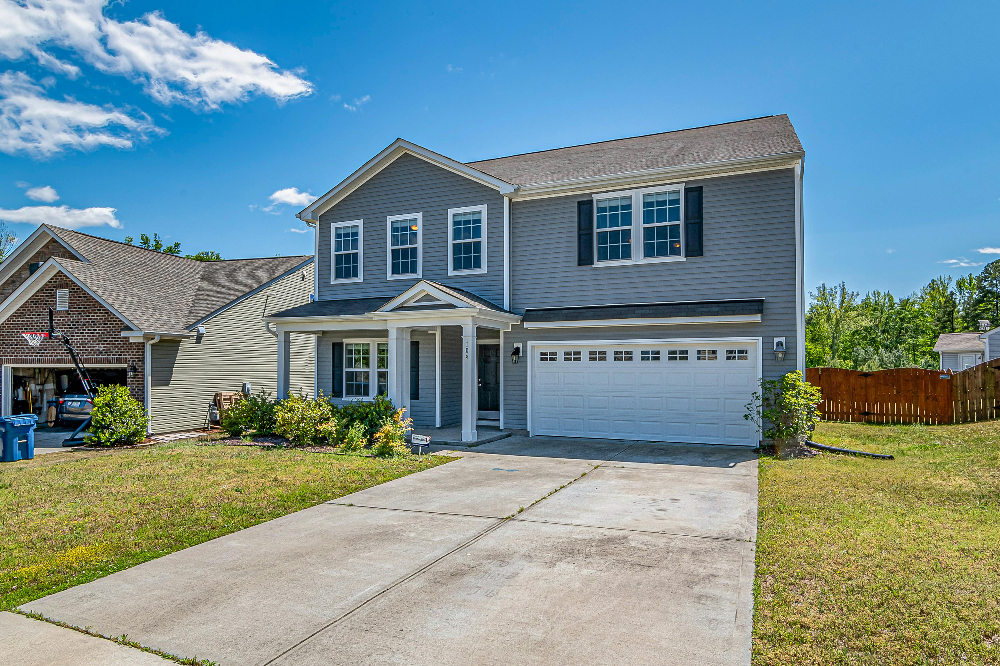
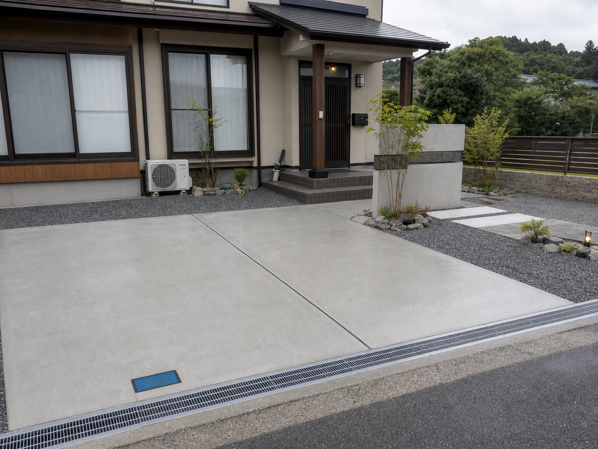
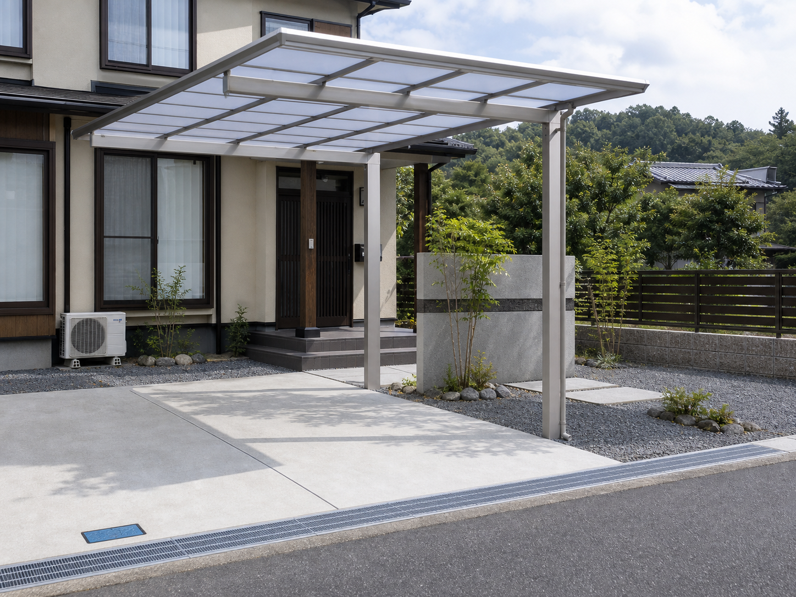
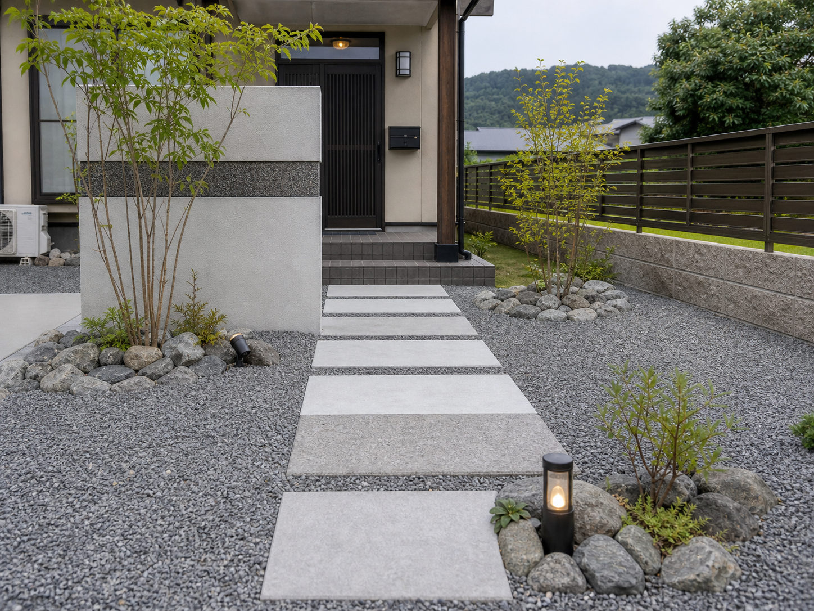
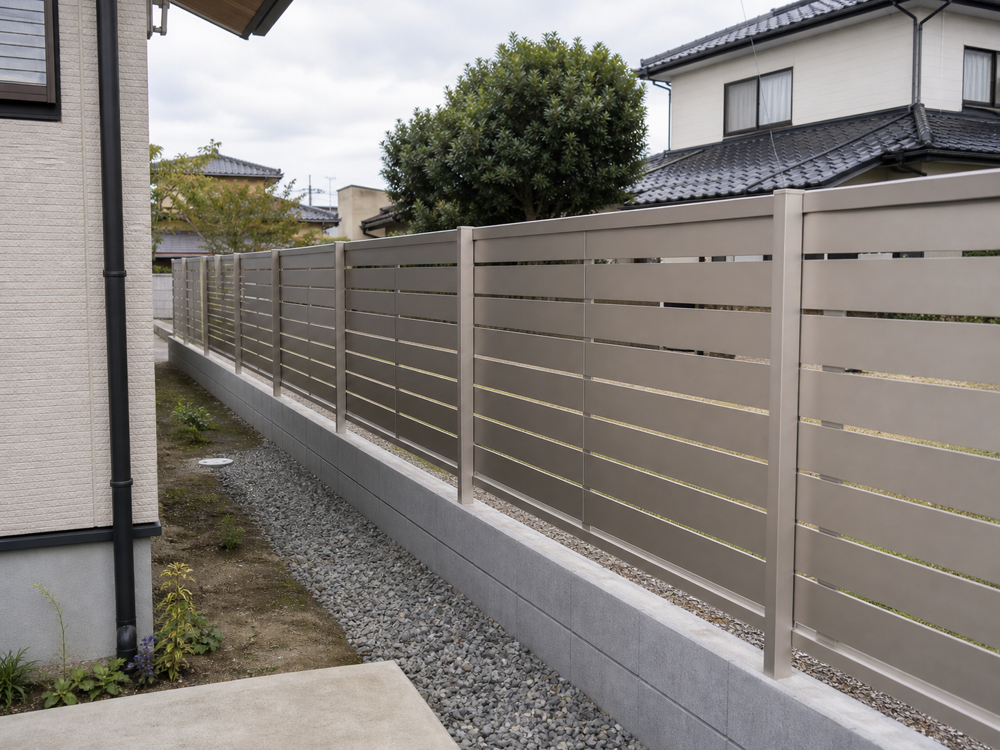
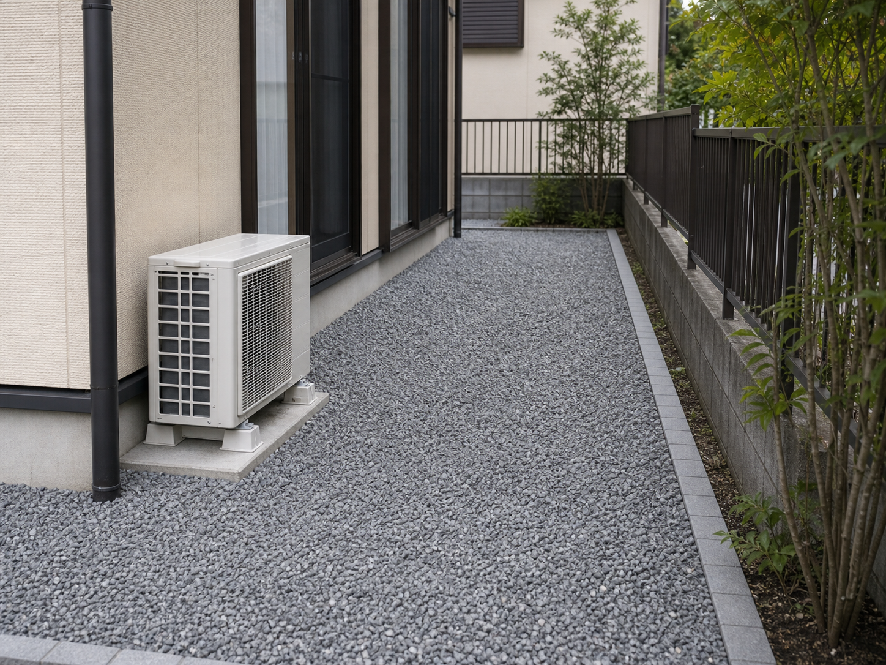
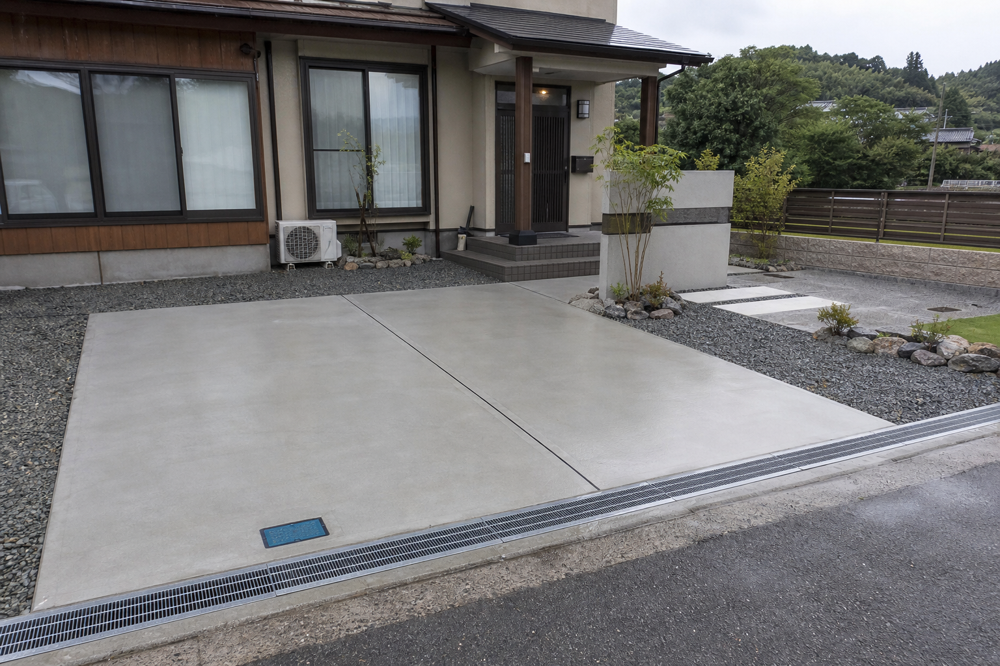
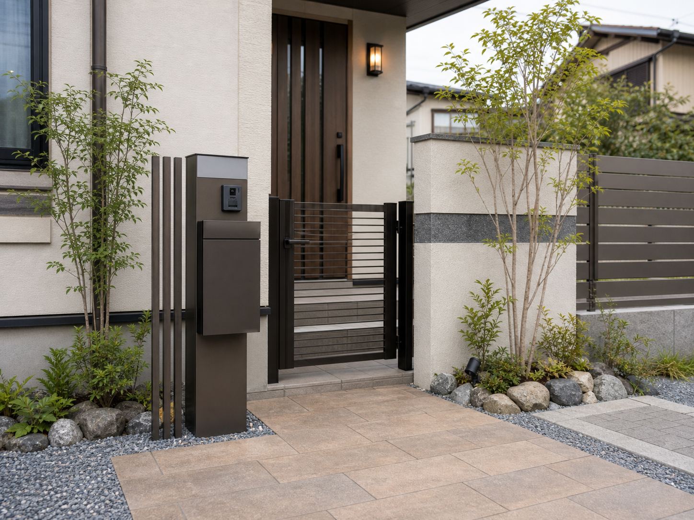
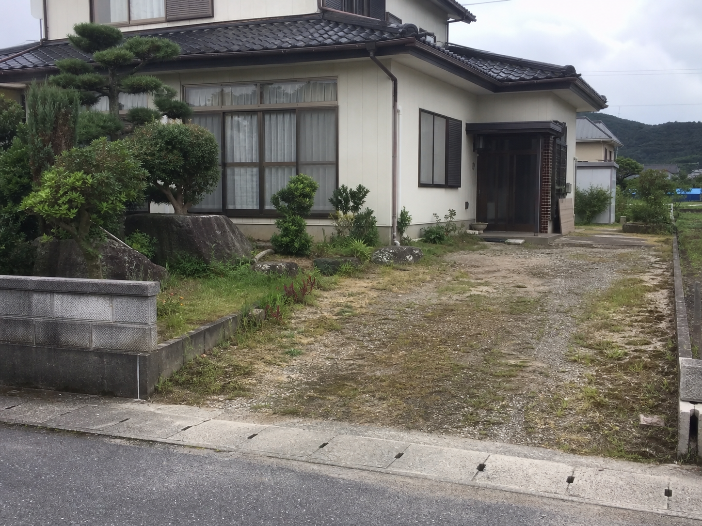
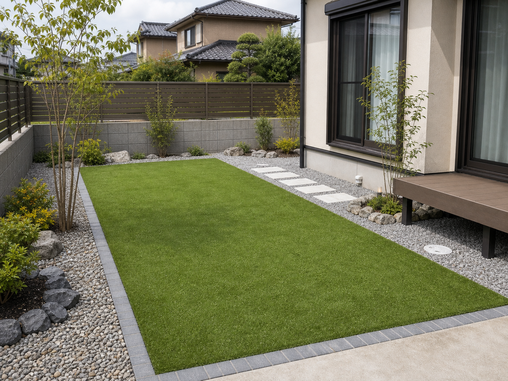

カーポート設置
雨の日の乗り降り、冬場の霜対策、車まわりの使いやすさを考えてご提案します。
鳥取県西部・島根県東部対応
カーポート、フェンス、庭まわり、駐車場土間コンクリートまで。KDYエクステリアは、見た目だけでなく動線・手入れ・費用感まで一緒に整理する、地域密着の外構屋です。

First Contact
金額、仕上がり、工事期間、どんな人が来るのか。KDYエクステリアでは、初めての方にも安心していただけるよう、現地確認からご提案まで分かりやすく対応しています。
LINEで気になる場所の写真を送っていただければ、相談内容の整理からお手伝いします。

Concept
外構は一度つくると、毎日使い続ける住まいの一部です。車の停め方、洗濯物の見え方、草抜きの手間、雨の日の動き。KDYエクステリアでは、完成直後の見た目だけでなく、数年後も「頼んでよかった」と思える外まわりを大切にしています。
相談から施工までの流れを見るService
雨の日の乗り降り、冬場の霜対策、車まわりの使いやすさを考えてご提案します。
道路や隣地からの視線をやわらげ、暮らしに合った高さや素材を選びます。
駐車スペースやアプローチを、歩きやすく掃除しやすい外まわりに整えます。
手入れの負担を減らし、家族が使いやすい庭まわりへ整えます。
Before You Build
車のサイズ、来客、将来の台数まで考えずに作ると、毎日の出入りで不便を感じやすくなります。
道路や隣地からの視線、洗濯物の見え方、庭で過ごす時間を想定して高さや素材を選びます。
草抜きや水はけ、掃除のしやすさまで考えて、無理なく使い続けられる外まわりに整えます。
Reason
大きな会社のような派手さはありませんが、現地確認から施工まで一つひとつ丁寧に進めます。無理な提案ではなく、ご予算や暮らし方に合わせた外構を一緒に考えます。
Works
写真は仮素材です。実際の制作では、御社の施工写真・ビフォーアフター・お客様の声を整理して掲載します。



駐車場土間 目隠しフェンス
目隠しフェンス
カーポート
玄関アプローチ
境界フェンス
車まわり外構
庭まわり整備
門柱まわり
視線対策
新築外構 職人紹介
職人紹介Case Story
ご家族の車が増えるタイミングで、既存の庭まわりを整理して駐車スペースへ。毎日の出入り、雨の日の歩きやすさ、将来のメンテナンスまで考えて、必要な範囲に絞った土間コンクリートをご提案しました。
Before / After
同じ現場の写真を使った比較イメージ。実制作では実際の施工前後写真に差し替えます。
同じ構図の写真で、施工後の変化が伝わるように見せる想定です。
Staff
はじめまして、KDYエクステリアです。現地で直接お話を聞き、暮らし方やご予算に合わせて無理のない外構をご提案します。大きな工事だけでなく、フェンス一部交換や庭まわりの小さな相談もお気軽にどうぞ。
Voice
駐車場の使いにくさを相談したところ、車の出し入れや雨の日の動きまで考えて提案してもらえました。説明が分かりやすく、安心してお願いできました。
米子市 / 駐車場土間コンクリート道路からの視線が気になっていましたが、フェンスの高さや色を一緒に考えてもらえて、家の雰囲気にも合いました。LINEで写真を送れたのも楽でした。
安来市 / 目隠しフェンス小さな工事なので頼みにくいと思っていましたが、現地で丁寧に見てもらえました。家族にもURLを送って相談内容を共有できたのが便利でした。
境港市 / 庭まわり整備Google口コミ 4.8
「説明が分かりやすい」「小さな相談でも丁寧」「仕上がりがきれい」などのお声をいただいています。
Price Guide
現地状況・面積・材料により変わります。まずは写真や現地確認をもとに、必要な範囲を一緒に整理します。
1台用の目安。商品グレードや基礎条件で変動します。
一部施工から対応。長さ・高さ・素材で変動します。
面積、勾配、排水、下地状況により変動します。
防草シート、砂利、人工芝など用途に合わせて提案します。
Flow
LINE、電話、フォームからご相談ください。
寸法、使い方、ご希望を確認します。
内容と費用を分かりやすくお伝えします。
完了後に仕上がりを一緒に確認します。
Free Estimate
「カーポートを付けたい」「駐車場を広げたい」「庭を管理しやすくしたい」。そんな段階から、写真や現地確認をもとに整理します。
Area / Map
米子市、境港市、安来市、松江市周辺の外構工事をご相談ください。エリア外も内容により対応できる場合があります。
実案件ではGoogleマップを埋め込み、口コミや所在地情報と連携します。
Guide
01
02
03
FAQ
はい。フェンスの一部交換、庭まわりの整理、駐車場の一部補修などもお気軽にご相談ください。
現地確認のうえ、内容に合わせてお見積もりします。まずは費用感を知りたい段階でも大丈夫です。
鳥取県西部・島根県東部を中心に対応しています。エリア外も内容によってご相談ください。
はい。気になる場所の写真を送っていただくと、現地確認前の相談がスムーズです。